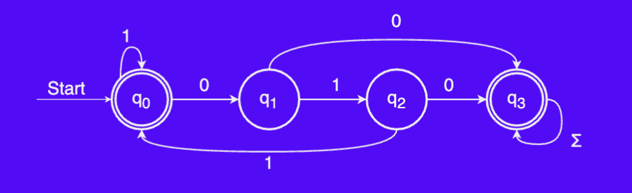
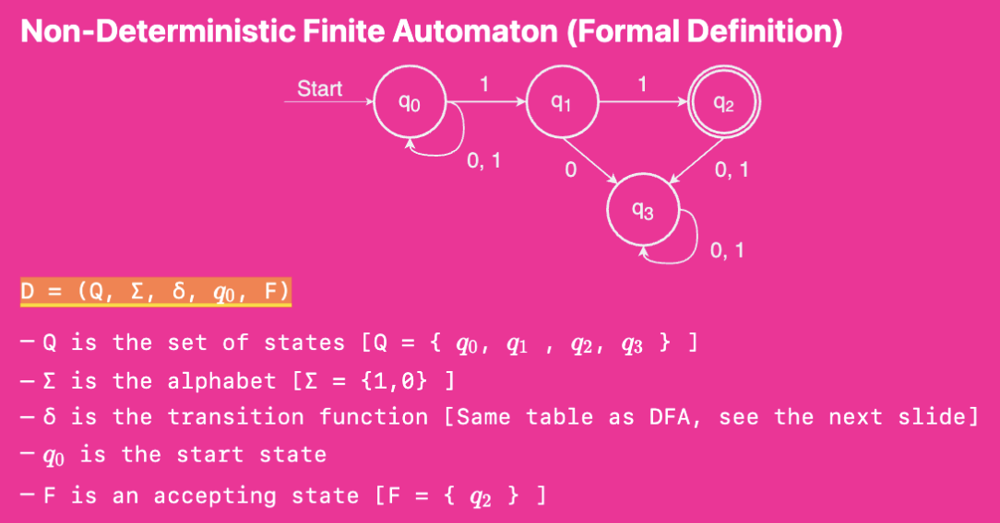

Lecture notes
- Lecture contents
- Deterministic finite automaton
- Tabular DFA
- Regular languages - Introduction - Complement of a language - Complementing regular languages - Closure properties
- Nondeterministic finite automaton - NFA Acceptance - [[#epsilon—transitions|- Transitions]]
- Designing NFAs - Introduction - Guess and check
- Difference between NFAs and DFAs
Lecture contents
- Tabular DFAs
- Regular Languages
- NGAs
- Designing NFAs
- Tutorial Questions
Deterministic finite automaton
Formal definition
- D → Automaton
- Q → Set of states
- → alphabet
- → Transition function
- → Start state
- F → Accepting state
Tabular DFA
Tabular representation of the transactions in a deterministic finite automaton
Possible exam question
A possible exam question is to draw up the tabular representation of a DFA

Regular languages
Introduction
Definition
A language L is called a regular language if there exists a DFA D such that If L is a language and L(D) = L, we say that D recognizes the language L
Complement of a language
Definition
Given a language , the complement of that language () is the language of all strings in that aren’t in L:
Complementing regular languages
- w contains aa as a substring
- w does not contain aa as a substring
Closure properties
Theorem
If L is a regular language, then L’ is also a regular language. As a result, we say that the regular languages are *closed under complementation
Nondeterministic finite automaton
Definition
An NFA is a Nondeterministic Finite Automaton. Structurally similar to a DFA, but represents a fundamental shift in how we’ll think about computation
- Nondeterministic computational model → Computing machine may have multiple decisions that it can make at one point. The machine accepts if any series of choices leads to an accepting state (Existential nondetermi anism)
Example of an NFA:

→ The only difference in the formal definition of a NFA from an DFA is the transition function.NFA Acceptance
Definition
An NFA N accepts a string w if there is some series of choices that lead to an accepting state. An NFA rejects a string w if no possible series of choices lead it into an accepting state.
- There is a difference between reaching a non-accepting state and to die:
- NFA Rejecting a string → all inputs are processed but the NFA ends in a non-accepting state
- NFA Dies → When executing a string, the NFA reaches a point where it can not process further input
- Transitions
Definition
An NFA may follow any number of -transitions at any time without consuming any input. NFAs are not required to follow such transitions.
Designing NFAs
- Guess and check method is enough
Difference between NFAs and DFAs
- Any language that can be accepted by a DFA can be accepted by an NFA
- (Every DFA is technically an NFA)
- Any language accepted by an NFA can also be accepted by a DFA